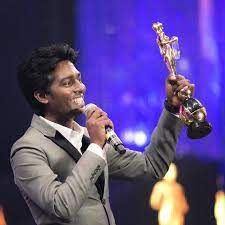

ATLEE "Best Debut Director"
21-09-1986
Mononymously in Indian Film Industry
Atlee is an Indian film director and screenwriter who works primarily in Tamil cinema. He is best known for his directorial debut Raja Rani (2013), produced by Fox Star Studios, for which he was awarded the Vijay Award for Best Debut Director. He worked with director Shankar for 5 years, acting as the associate director for landmark films such as Enthiren (Robot) and Nanban. Atlee further shot into limelight with his award winning short film Muggaputhagam (Facebook). Atlee's married to actress Krishna Priya in November 2014. He had known her for nearly eight years